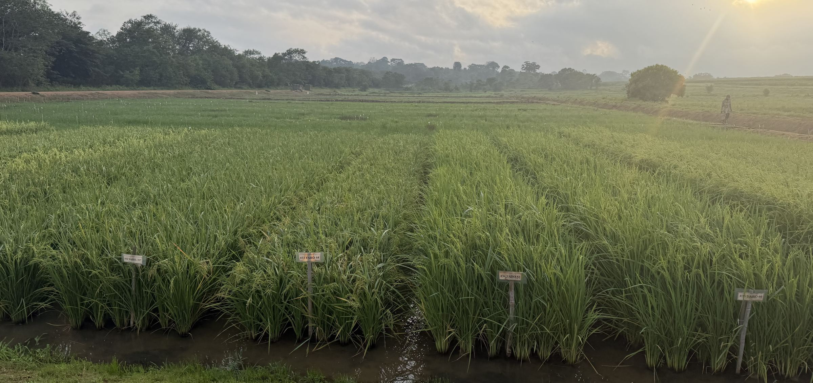

Publications, tools and methods
Below are 37 hand-picked publications, tools and methods on climate from across CGIAR, each linked to where it is published. A search also covers the 300 most recent open-access journal articles, working papers, reports and briefs that CGSpace files under CGIAR’s climate adaptation and mitigation impact area, from any CGIAR program, and lists any matches after the hand-picked items. Results must contain every word you type, so if a phrase finds nothing, try a single word such as rice, methane or Kenya. Climate data, and the related data used in adaptation, mitigation and risk assessment, are on the Climate Data Hub.
Full records are kept in CGSpace and Gardian, and the data itself is on the Climate Data Hub.